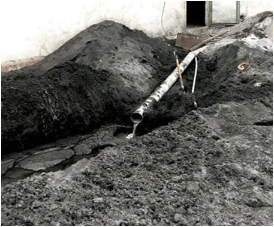
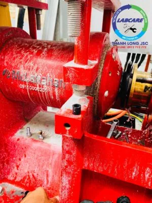
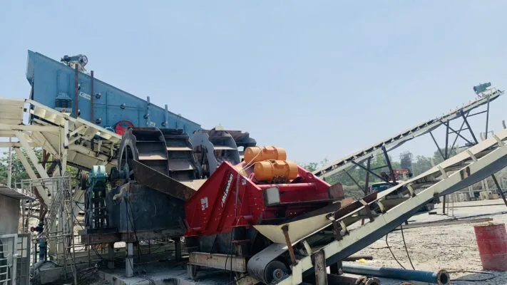
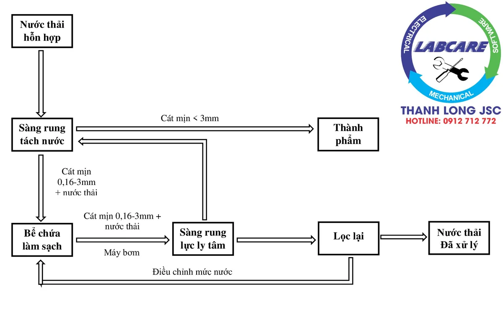

Thực tế các mỏ khai thác cát tự nhiên, khai thác đá để sản xuất cát nhân tạo hiện nay, theo cách truyền thống thường ứng dụng quy trình sản xuất ướt, công đoạn rửa cát để làm sạch thành phẩm, các chủ mỏ thường sử dụng máy rửa trục vít xoắn hoặc guồng rửa kiểu bánh xe. Trong quá trình rửa thành phần cát mịn có kích thước 0.16mm – 3mm, sẽ bị trôi theo dòng nước thải ra ngoài. Tỷ lệ thất thoát rất lớn, thậm chí mất hơn 20%.
Trong một số trường hợp, nếu nghiền cát bằng máy búa hay máy nghiền cát VSI công nghệ cũ kiểu đá va kim loại, lượng cát mịn tạo ra nhiều thì khối lượng hạt bị mất theo dòng nước trên 40%. Thực tế không như chúng ta nghĩ chỉ mất năng suất sản xuất, giảm chất lượng của máy rửa cát và gây ô nhiễm môi trường, mà còn ảnh hưởng lớn đến tới chất lượng cát trong quá trình phân loại hạt cát, không kiểm soát được module cát thành phẩm, cấp phối bê tông, … máy tách cát mịn Thanh Long JSC sẽ giải quyết mọi vấn đề nêu trên.
Tiền đổ sông đổ biển
Lượng cát nhỏ sẽ trôi theo theo đường nước thải tổng hợp, của các dây chuyền máy nghiền đá, sản xuất cát nhân tạo. Vì thế “tiền” của các chủ đầu tư sẽ “đổ sông đổ biển” một cách lãng phí và chỉ biết đứng nhìn.
Máy tách cát mịn của Thanh Long JSC có công nghệ tiên tiến nhất thế giới. Được thiết kế thu hồi các hạt cát kích thước nhỏ, tách chúng ra khỏi nước thải. Giúp các chủ mỏ thu hồi “tiền” về từ các đường nước thải tổng hợp.

Nước thải tổng hợp từ các mỏ đá
“Sức mạnh” của máy tách cát mịn Thanh Long JSC
Máy tách cát mịn Thanh Long JSC được sử dụng rất nhiều. Nhằm phục vụ cho rất nhiều cho ngành công nghiệp khai thác mỏ, xử lý nước thải, rửa cát, rửa sỏi, cốt liệu, sản xuất cát tự nhiên và cát nhân tạo, … Có chức năng giữ lại lượt cát nhỏ đó. Làm nguồn nước thải ra bể lắng sạch, trong hơn, tái sử dụng nhiều lần.
Lượng nước thải ra môi trường cũng là mối quan tâm hàng đầu của chủ đầu tư, khiến chúng ta “đau đầu” để xử lý chúng. Vì ai cũng muốn có một môi trường “xanh, sạch, đẹp”.
Theo thông tin mới cập nhật từ Bộ Tài Nguyên Môi trường, và sở TNMT các tỉnh. Năm 2021-2020 tới sẽ thanh tra kiểm tra nghiêm ngặt, các cơ sở sản xuất cát về nước thải ra môi trường.

máy rửa cát đồi MclanahanMáy tách cát mịn Thanh Long JSC “dẹp hết” các nỗi lắng lo của chủ đầu tư
Giải quyết vấn đề cát thất thoát nước thải hiệu quả. Thu hồi cát mịn 0,16-3mm lên tới 95%
Tuổi thọ cao và không còn tình trạng tắc nghẽn đường ống dẫn nước thải, tích tụ tại bể lắng
Loại bỏ hoàn toàn các tạp chất trong nước rửa cát.
Thiết kế gọn nhẹ, dễ lắp ráp, di chuyển. Hệ thống điện thông minh dễ dàng tăng giảm công suất
Giảm thiểu lượng nước thải vốn gây ô nhiễm, tốn nhiều chi phí cho việc xử lý môi trường
Công nghệ vượt trội và lợi thế kinh tế, Năng suất kỹ thuật theo yêu cầu của khách hàng.
Bảo trì, bảo dưỡng dễ dàng

dây chuyền nghiền sỏi
Nguyên lý hoạt động

Máy tách cát mịn Thanh Long JSC 0912.712.772
Máy tách cát mịn bao gồm bơm, một ống cao su xyclon và một sàng rung tách nước cao tần. Thông qua ống cao su xyclon, hỗn hợp cát mịn + tạp chất và nước thải từ bể lắng vào máy tách dạng cuộn xoáy bằng ống bơm.
Cát mịn được tận thu bằng lực ly tâm của xyclon, sẽ được phân tách khỏi nhau và đi theo hai hướng riêng biệt. Phần cát mịn được tách ra sẽ theo phía cửa ống, có sàng rung tách nước từ miệng của vòi phun.
Cát mịn 0,16-3mm và nước được tách một cách hiệu quả bởi cơ chế lực ly tâm của sàng rung. Cát mịn sẽ được rung lắc liên tục ở tần số rung cao, nhằm vắt nước ra khỏi cát mịn. Sau đó cơ cấu rung liên tục, hất ngược cát lên trên để hạt cát rơi qua sàng rung khác. Cát mịn thu được sẻ đi ra băng tải, một phần nước lẫn bùn còn lại sẻ rớt xuống sàn vào bể chứa.
Quy trình cứ như thế được lặp đi lặp lại một cách tuần hoàn. Qua đó hoàn thành ba chức năng làm sạch, tách nước và phân loại cát mịn.